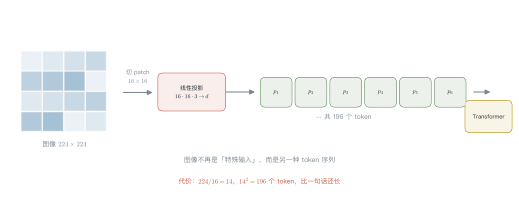
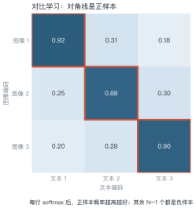
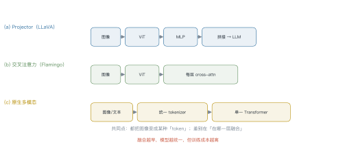
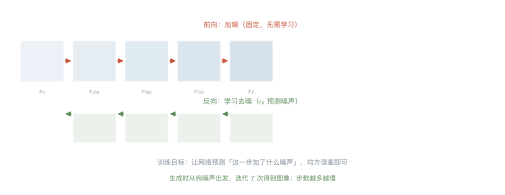

第 19 讲 多模态¶
本讲位置
第五部分的收尾。前面所有讲次都在处理文本，本讲讲"图像怎么进来"——以及进来之后，为什么架构会和语言模型长得一样。
📅 事实核查至 2026-11
ViT（Dosovitskiy et al., 2020）、CLIP（Radford et al., 2021）、LLaVA（2023）、DDPM（Ho et al., 2020）均已核对原文。
学习目标¶
学完本讲，你应该能够：
- 算出 ViT 把一张图切成多少 token，并说明代价；
- 写出 CLIP 的对比损失，手算一次 batch 内的正样本概率；
- 说出三种视觉-语言架构的融合位置差异；
- 解释扩散模型的前向与反向过程，以及为什么训练目标只是"预测噪声"。
0 直觉：图像怎么变成 token¶
语言模型只认 token。要让图像进来，只有一条路：把图像也变成一串 token。
三种做法：
| 做法 | 代表 | 思路 |
|---|---|---|
| 切 patch | ViT | 图像切成小方块，每块当一个 token |
| 对齐到文本空间 | CLIP | 图像编码成向量，与文本向量对齐 |
| 统一 tokenizer | 原生多模态 | 图文共用一个离散词表 |
第一种最通用，也是今天 VLM 的主流。
一句话总结
多模态的关键不是"加一个视觉模块"，而是让图像变成 Transformer 能吃的序列。
1 ViT：把图像切成 patch¶

例 19.1 算一下 token 数¶
\(224\times224\) 的图，patch 边长 16：
换成 patch 边长 14：
一张图就 196–256 个 token，比一句话还长。4K 图像（\(3840\times2160\)）按 patch 16 切：
这就是高分辨率图像贵的根本原因——不是算不动，是 token 太多。
从这个例子里能读出三件事
- token 数随面积增长：分辨率翻倍，token 数翻四倍；
- patch 越大越省：但细节丢失，小字看不清；
- 工业界做法：先缩放到 \(224\) 或 \(336\)，需要细节时再切子图（tiling）。
1.1 ViT 的位置编码怎么加¶
图像被切成 patch 后，顺序信息就丢了——和文本一样，需要位置编码。
三种做法：
- 可学习的一维位置编码：把 196 个 patch 当成 196 个位置，各学一个向量（原版 ViT）；
- 二维位置编码：分别编码行与列，更符合图像的二维结构；
- 相对位置偏置：在注意力里加位置偏置，外推到更大分辨率时更稳。
一个关键差异：文本长度可变，图像分辨率也可变。用可学习的一维编码时，换个分辨率就得插值——这是 ViT 迁移到高分辨率时的常见麻烦。
2 CLIP：图文对齐¶

CLIP 用两个编码器（图像、文本）把样本映射到同一空间，然后做对比学习：
其中 \(\boldsymbol{u}_i\) 是图像向量、\(\boldsymbol{v}_i\) 是文本向量、\(\tau\) 是温度。
例 19.2 手算一次对比损失¶
batch 只有 3 对。第 1 张图与三条文本的相似度是 \([0.92,\ 0.31,\ 0.18]\)。
为便于手算，取 \(\tau=0.5\)（真实 CLIP 用 \(0.07\)，会更尖锐）：
取指数：
归一化，正样本概率：
损失：
怎么读这个数：0.657 意味着模型只有 66% 的把握认出"这张图配这段文字"。训练就是把这个数推向 1。
3 三种架构¶

| 架构 | 代表 | 优点 | 缺点 |
|---|---|---|---|
| Projector | LLaVA | 实现简单，复用现成 LLM | 图像 token 挤占上下文 |
| Cross-attention | Flamingo | 图像不占文本位置 | 结构复杂，训练难 |
| 原生 | GPT-4o / Gemini | 真正的统一模型 | 需要从零训练 |
LLaVA 的做法最省：冻结视觉编码器与 LLM，只训一个两层 MLP 把图像特征映射到词向量空间。几千条图文指令数据就能出效果。
3.1 视觉指令微调的数据长什么样¶
LLaVA 的做法很直接：把图像特征当成"特殊的词"塞进对话。
一条样本大致是：
其中 <image> 会被替换成 576 个视觉 token（\(24\times24\) 个 patch）。
关键点：训练时只对 assistant 部分算损失（第 8 讲的 loss mask），视觉 token 不产生梯度。这让"冻结视觉编码器"成为可能——只训 projector 和 LLM 的适配层。
4 扩散模型¶

4.1 前向：加噪¶
其中 \(\bar\alpha_t=\prod_{s=1}^{t}(1-\beta_s)\)，随 \(t\) 递减。
4.2 反向：学去噪¶
网络 \(\boldsymbol{\epsilon}_\theta(\boldsymbol{x}_t,t)\) 预测噪声，损失是
例 19.3 信噪比怎么变¶
信噪比（SNR）定义为
| \(t\) | \(\bar\alpha_t\) | SNR | 含义 |
|---|---|---|---|
| 0 | 1.00 | \(\infty\) | 原图 |
| 250 | 0.80 | 4.0 | 轻微噪声 |
| 500 | 0.50 | 1.0 | 一半信号一半噪声 |
| 750 | 0.10 | 0.11 | 基本看不清 |
| 1000 | \(10^{-5}\) | \(10^{-5}\) | 纯噪声 |
结论：前 250 步在加"细节噪声"，后 250 步在摧毁结构。所以生成时早期的步最关键——它决定整体构图。
import torch
def patchify(img: torch.Tensor, patch: int = 16) -> torch.Tensor:
"""(B, 3, H, W) -> (B, N, 3*patch*patch)"""
b, c, h, w = img.shape
assert h % patch == 0 and w % patch == 0
x = img.reshape(b, c, h // patch, patch, w // patch, patch)
x = x.permute(0, 2, 4, 1, 3, 5) # (B, H/p, W/p, C, p, p)
return x.reshape(b, -1, c * patch * patch)
img = torch.randn(1, 3, 224, 224)
tokens = patchify(img)
print(tokens.shape) # torch.Size([1, 196, 768])
print(196 * 768) # 150528 = 3*16*16*196，与输入像素数一致
5 统一多模态的路线¶
三条路线在竞争：
- 拼接派（LLaVA）：视觉编码器 + projector + LLM，工程上最快；
- 交叉注意力派（Flamingo）：保持 LLM 不变，靠新增层注入视觉；
- 原生派（GPT-4o、Gemini）：图文音视频从预训练第一天就在一起。
趋势：随着算力变便宜，原生派在变强——因为"对齐两个独立编码器"总会损失信息，而联合训练不会。
5.1 视频与音频：时间维度的爆炸¶
图像已经是 196–256 token，视频还要乘上帧数：
一段 10 秒、30fps 的视频有 300 帧，按每帧 196 token 算是 58,800 token——远超上下文窗口。
三条对策：
- 抽帧：每秒取 1–2 帧，信息损失可接受；
- 时空 patch：把时间维也切成 patch（如 \(2\times16\times16\)）；
- 压缩成 latent：先用视频编码器压到低维，再进 LLM。
音频同理：16kHz 采样一秒就是 16000 个采样点，必须先过声学编码器变成几十个 token。
6 工程要点与坑¶
- 分辨率是成本：4K 图 3 万 token，先缩放再处理。
- 图像 token 挤占上下文：一张图 256 token，十张图就吃掉 2560。
- CLIP 的零样本很强，但不是万能：细粒度分类（如鸟类亚种）远不如专用模型。
- 扩散模型的步数是延迟：50 步生成一张图，比一次前向慢两个数量级。
- 图文对齐有偏见：CLIP 在性别、种族上都有可测量的偏差。
- 多模态评测要看任务：VQA、OCR、图表理解，差别很大。
7 论文与延伸¶
| 年份 | 论文 | 一句话贡献 |
|---|---|---|
| 2020 | ViT | 图像切 patch 进 Transformer |
| 2020 | DDPM | 扩散模型 |
| 2021 | CLIP | 图文对比学习 |
| 2022 | Flamingo | 交叉注意力注入视觉 |
| 2023 | LLaVA | projector + 视觉指令微调 |
| 2024 | Chameleon | 原生混合模态 |
8 习题¶
🟢 概念题
- 为什么说 ViT 让"图像和文本用同一个架构"成为可能？
- 扩散模型的前向过程为什么不需要学习？
🟡 推导题
- 用 (19.2) 推导 \(t\) 步后的信号方差与噪声方差，验证 SNR 的表达式。
- 用 (19.1) 算：batch=4、正样本相似度 0.8、三个负样本 0.2，\(\tau=0.5\) 时的损失。
🔴 实现题
- 跑通
patchify，验证输出 token 数与输入像素数的关系。 - 用 CLIP 类模型做一个零样本分类，统计 10 类的准确率。
9 本讲小结¶
一个公式
三个数字
- \(224\times224\)、patch 16 → 196 token
- 4K 图 → 3.2 万 token
- CLIP 的温度 \(\tau=0.07\)
三条路线
projector · cross-attention · 原生
一句话
多模态不是加模块，是让图像变成序列；融合得越早，模型越统一。
来源¶
- ViT、CLIP、LLaVA、DDPM 的公式与结论核对自原文，链接见 §7，核查日期 2026-11。